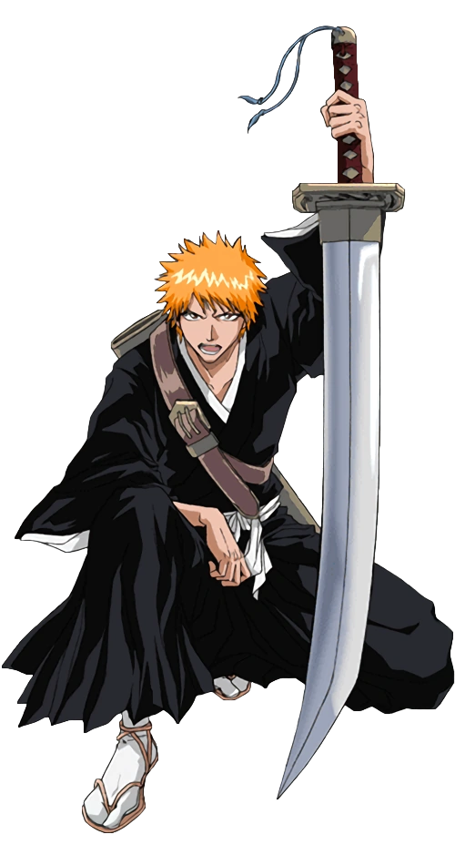
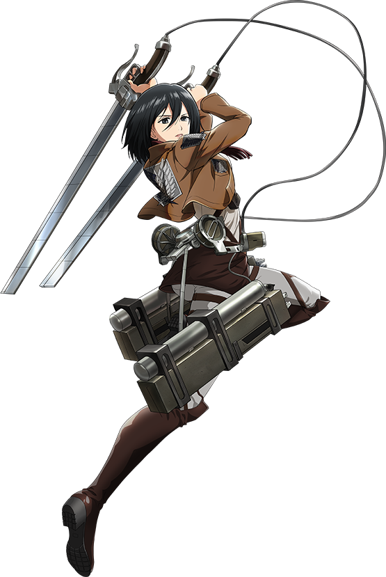
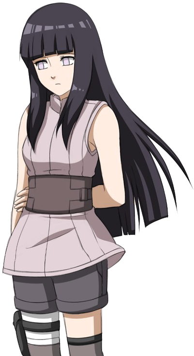

-
Pink haired boy who only had his grandpa. When the grandpa dies he ends up collecting musty fingers to eat.
The answer is:
Itadori Yuuji for more info
for more info
-
Tough high schooler with wild orange hair spending his time fighting evil spirits, all while looking like he’d rather be napping.
The answer is:
Kurosaki Ichigo  for more info -
A boar-headed, muscle-packed bundle of chaos, with a face so pretty it could make you forget he’s covered in battle scars
The answer is:
Hashibara Inosuke for more info
for more info
-
Boy who woke from a nightmare decides to commit genocide after eating his father.
The answer is:
Eren Yeager for more info
for more info
-
The “don’t mess with me” badass who could slice you in half while looking like she’s just out for a stroll.
The answer is:
Mikasa Ackermann  for more info -
The shy, sweet ninja looking like a cinnamon roll, but can totally kick your butt when you least expect it!
The answer is:
Hyuga Hinata  for more info